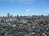
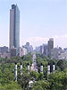
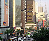
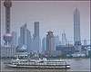
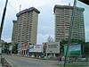
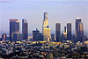
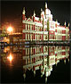
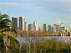

A More Accessible Map
The World's Ten Most Populated Cities
- Tokyo, Japan
-

Tokyo, Japan the most populated city in the world, with a population of 28025000 people.
- Mexico City, Mexico
-

Mexico City, Mexico the second most populated city in the world, with a population of 18131000 people.
- Mumbai, India
-
Mumbai, India formerly known as Bombay has the third largest population of 18042000 people.
- Sao Paulo, Brazil
-

Sao Paulo, Brazil has the fourth largest population in the world with 17711000 people.
- New York City, USA
-
New York City, USA the fifth most populous city in the world, with a population of 16626000 people.
- Shanghai, China
-

Shanghai, China situated on the banks of the Yangtze River has a city population of 14173000, making it the sixth most populated city.
- Lagos, Nigeria
-

Lagos, Nigeria has the seventh largest city population with 13488000 people.
- Los Angeles, USA
-

Los Angeles, USA has the eighth largest city population with 13129000 people.
- Calcutta, India
-

Kolkata, India with a population of 12900000 it is the ninth most populous city in the world.
- Buenos Aires, Argentina
-

Buenos Aires, Argentina has the tenth largest city population of 12431000 people.